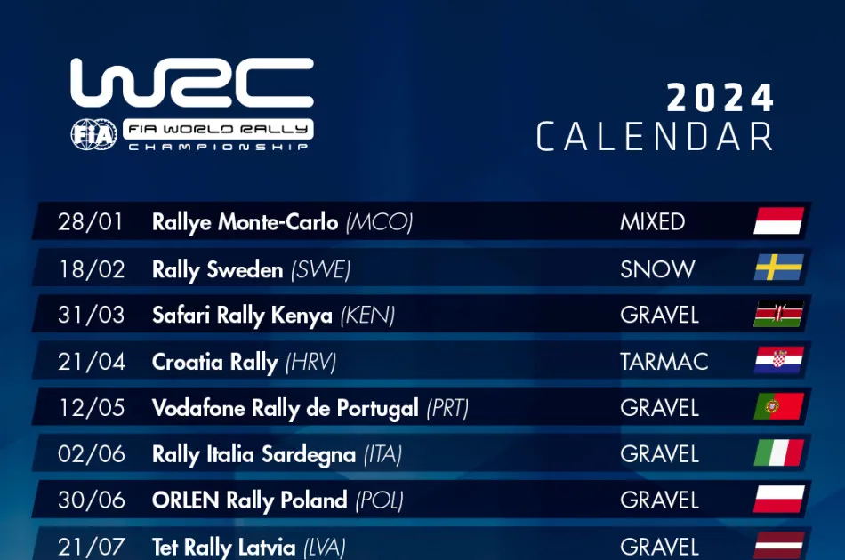
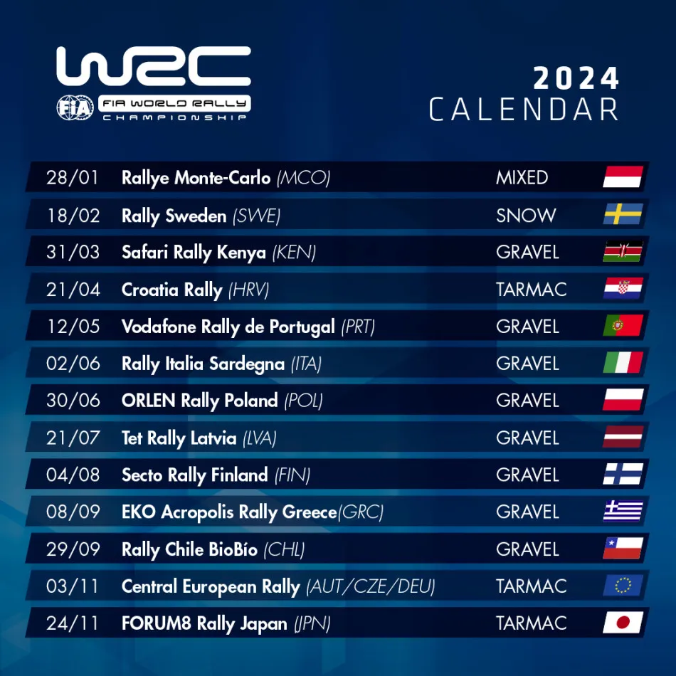
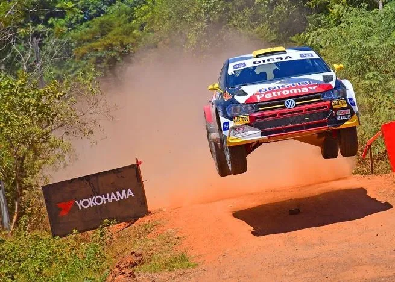
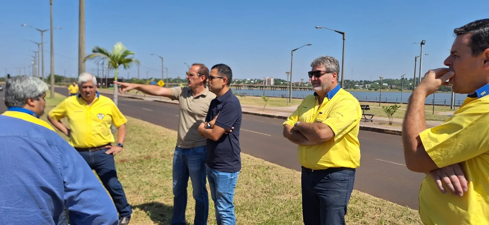
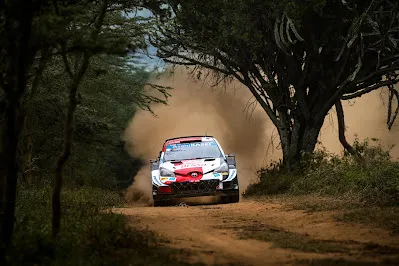
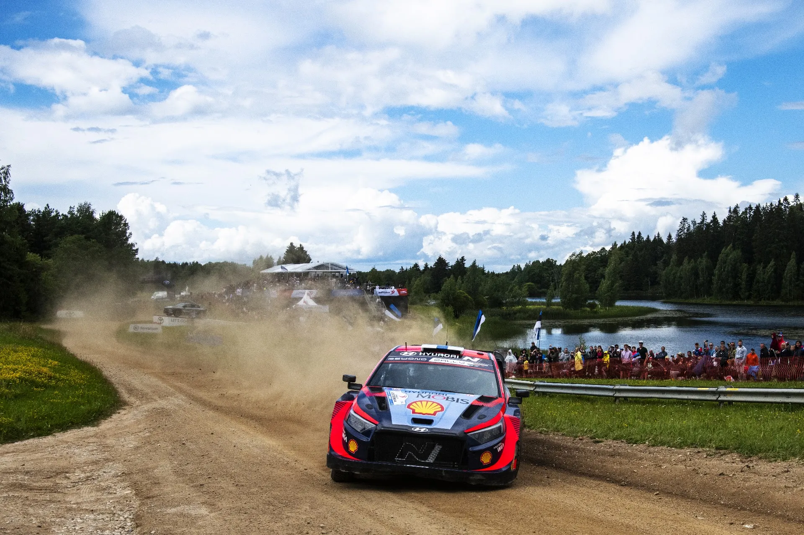
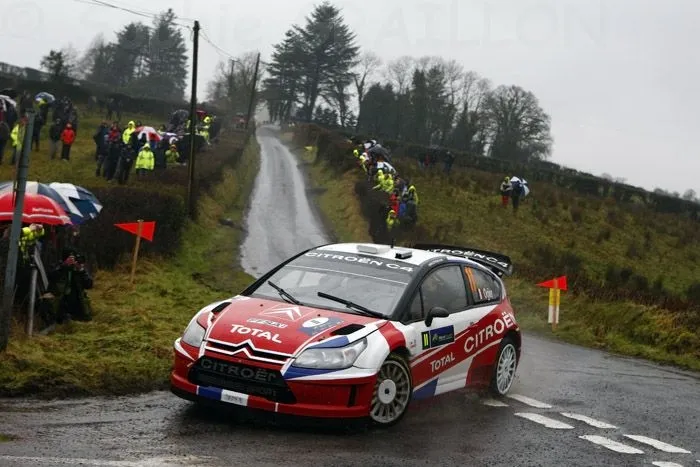

Taking a look at what a potential 2025 WRC calendar will look like
This has to be the earliest we've ever had this many rumors about the upcoming season's calendar. In this post we will be examining every country vying for a slot in the WRC's upcoming calendar(s), and also taking a look at what rallies they'll be potentially replacing.

The 2024 WRC calendar, pic from the FIA's website
The countries with the more serious bids are, Ireland, Paraguay, Estonia, USA and Saudi Arabia. Other countries have also expressed interest, namely Argentina, Spain and more recently the UK announced they'd be interested in bringing Rally GB back, in Scotland. Argentina's bid was a very serious one, being considered a lock for the 2025 calendar, with the Argentines narrowingly missing out on a 2024 slot to Poland. Unfortunately for them, their new government has massively cut down on spending, meaning Motorsport events are in the bottom of their priority list, something which was reaffirmed with the cancelation of their 2024 MotoGP round. That's how Paraguay became a very serious applicant for a place in next season's calendar.

Paraguay wants to host an event based on the Trans Itapua Rally for 2025
The Paraguayans have been wanting to host a WRC event since 2019, when their government announced its intentions for one. The 2020 version of the Trans Itapua Rally was supposed to be a candidate event for 2021, but it was cancelled because of COVID. Now Paraguay is the closest it's ever been to hosting a WRC rally, with many media in the country reporting that the deal will be confirmed as soon as the government gives it the all clear. And it's not just for clicks either, with the organisers having met with the WRC promoter to discuss terms etc in December of 2023, when Argentina's bid started to lose its weight, with the first reports for an agreement coming in early February from the local press.

A candidate event will be held in Itapua 15 days before Rally Chile
But what event would Paraguay be replacing? The reports seem to suggest that the promoter wants to have 2 rounds in South America, with Chile and Paraguay running back to back, not dissimilar to Argentina and Chile in 2019. But it's unclear how long Rally Chile's contract is. And for that to happen would mean some calendar shuffling would need to take place, with Acropolis perhaps moved earlier in the season. Paraguay's rally is a rough gravel event which reminds me of "Safari x Indonesia". And this could be the WRC's replacement for the Safari Rally. The Kenyan event has been a fan and driver favourite... but there have been issues. The Rally Guide 1 for this year's rally came late, and it featured an identical itinerary to the 2023 Safari. That was on top of a failed move to another location for the second year running, and many reports that there are money problems relating to the event.

Could Safari see itself off the calendar? (picture from the Red Bull Content Pool)
Now to some more clear cut news. Estonia will be replacing Latvia for 2025. The only reason Latvia got a slot was because the newly elected Estonian government wasn't able to validate a budget for the Rally in time for the 2024 calendar. So rejoice Estonian rally fans, your rally will be back for 2025!

Rally Estonia will be back for 2025
After this small Baltic intermission, Ireland! They are also very close to hosting their first WRC round since 2009. In just 2 months, Motorsport Ireland managed to do what the UK has been trying to do for almost 4 years now, and that is bringing the WRC back to the British Isles.
Motorsport Ireland has gone as far as awarding Kerry, Limerick and Waterford the HQ for the rally from 2025 to 2027. The promoter visited Ireland last week to discuss about the event, and we will know more about Ireland's bid in March. But it's looking good. Ireland is likely to replace Poland in 2025. A more outlandish scenario would be that Ireland finds itself in the 2025 calendar at the expense of Croatia. That is because, Rally Croatia's organisers were on a podcast recently discussing the future of the rally, and there are some money problems there as well, with the rally still not having a title sponsor in all its years in the championship, and also problems with the rally base in Zagreb, hence why the rally will be moving to Istria for 2025. Such a scenario is unlikely though, so Poland still looks to be out either way, making way for Paraguay or Ireland.

An event in Ireland would be a fan favourite
USA's bid is for 2026, so we'll talk about it in a later post, because frankly, this post is already too long. And now lastly, Saudi Arabia. I won't be bothering you with any of this "a sense of change in the region", "it's different actually" and "bringing change to the region" nonsense. The WRC should NOT be going to Saudi Arabia under no circumstances.